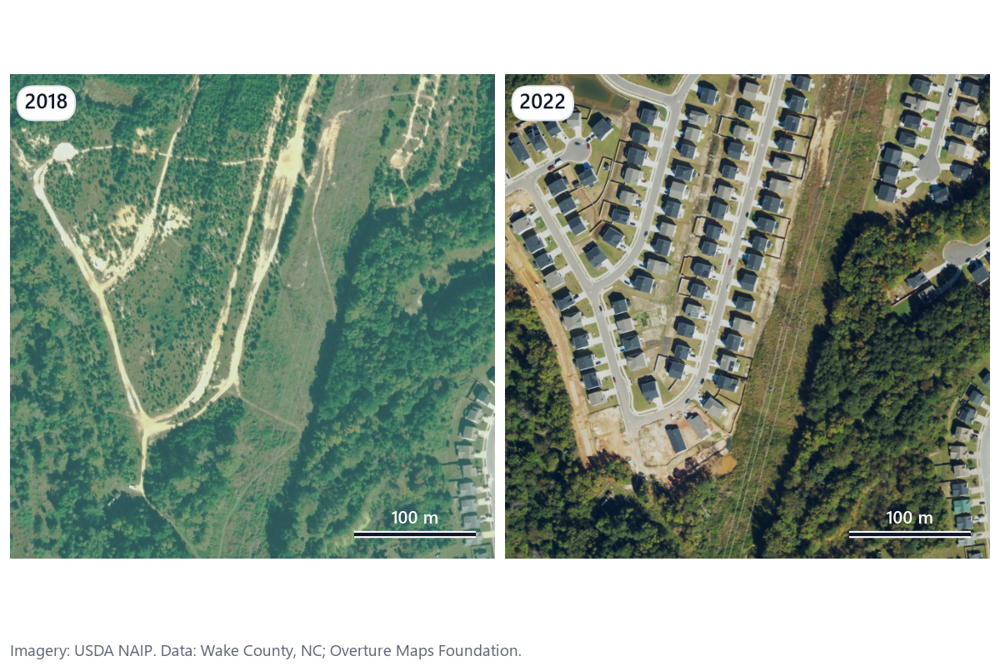

Finding the buildings the tax roll missed
ParcelWatch compared 2018 and 2022 aerial imagery over 25 km² of east Wake County, NC, and checked every changed parcel against the county's building permits.

How it works
- Download. USDA NAIP imagery for 2018 (flown 2018-10-22) and 2022 (2022-09-27 and 2022-10-06), 0.6 m, red, green, blue and near infrared. Wake County parcels, building permits and town limits. Overture building footprints for training labels.
- Prepare. Both years go onto one 0.6 m grid in NAD83 / UTM 17N. The offset between years is measured at 5 road intersections; the match tolerance is that offset plus 1 m, kept between 3 and 6 m.
- Detect. One building model, one set of settings, both years.
- Compare buildings, not pixels. NAIP is only accurate to about ±6 m, so pixel differencing would light up every roof edge. Buildings are matched as objects: no match means new; at least +20 m² and 1.2× the old area means expanded; a 2018 building with no 2022 match means demolished.
- Check permits. A changed parcel counts as permitted if any building-related permit issued between 2017-10-22 and 2022-10-06 sits inside it or carries its parcel number. Only parcels with a new building and no permit are flagged: in the accuracy check, expansion and demolition flags were almost never real.
- Validate and price. 100 flagged and 100 unchanged parcels are drawn at random and checked by eye, blind to the model's answer.
Accuracy
Validation is pending.
| Real change | No change | |
|---|---|---|
| Flagged | ||
| Not flagged |
Confirmed flags by what the model claimed
| Claim | Flags | Confirmed | Precision |
|---|
False alarms by cause
"Other" means the same building stood in both years but the model drew it with a different outline, or missed it in 2018.
Money
value per sq ft = median(BLDG_VAL / HEATEDAREA), homes built 2021 or later in the box
missed value = added sq ft × value per sq ft × 100% assessment
yearly tax = missed value × (53.71¢ county + town rate) per $100
Wendell +42.00¢, Knightdale +44.00¢, unincorporated +0
reported = sum over flagged parcels × measured precision
Tax year 2026 rates. Fire district tax is left out, so the figure is conservative.
Limitations
- Flags are leads from aerial imagery, not findings. A field review is needed before any action.
- Trees and shadows hide roofs and fool the detector; both cause false alarms and misses.
- NAIP's ±6 m accuracy means small additions under 20 m² can't be told apart from noise.
- Only roofed buildings count. Pools, decks, patios and interior finishes aren't detected.
- A permit inside the window counts for the whole parcel, even if it was for a different building.
- Value per sq ft is one median for the whole area; real assessments vary by house.
- The public map shows H3 hexagons with at least 5 parcels. No parcel, address or owner is published.
Applying this elsewhere
US counties. Any county with open parcels and permits can run it: a new config file maps field names, tax rates and the study box. NAIP covers the lower 48 every two to three years.
Gulf municipalities. The same workflow is a permit compliance check: compare building footprints between two image dates and match them against building permits by plot number or location. Higher-resolution imagery and a model fine-tuned on local roof types would replace NAIP.
Links
- Interactive map
- Code: github.com/Muhammadshahidusman/ParcelWatch (MIT)
- Contact: Muhammad Shahid Usman, shahidusmaninfo@gmail.com
Imagery: USDA NAIP. Data: Wake County, NC (CC BY 4.0); Overture Maps Foundation (ODbL).